Префектура Аомори · Овани и горы Хаккода · онсэн и лыжи
KAI Tsugaru и горы Хаккода: весенние лыжи, онсэн Овани и культура Цугару
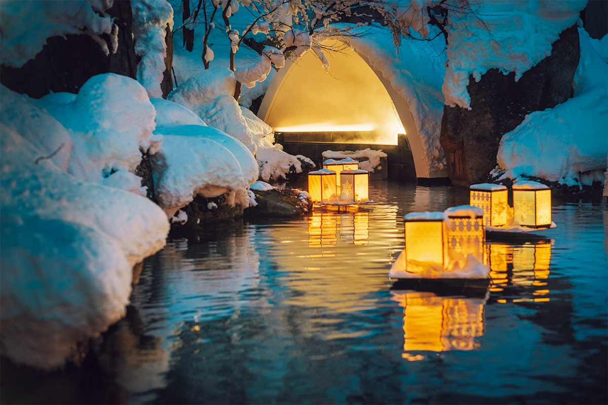
Зимой горы Хаккода почти всегда закрыты метелью, а весной превращаются в рай для лыжников. Спустившись с гор, стоит ехать в Овани, старый онсэн юга Цугару, где рёкан KAI Tsugaru собрал под одной крышей горячую воду, кухню и ремёсла этого края.
Горы
Хаккода: от «белого ада» к лыжному раю
Хаккода это группа вулканов в центре префектуры Аомори, которая входит в список ста знаменитых гор Японии. Под этим именем объединяют 18 вершин, главная из них Одакэ высотой 1585 м. Массив делится на северную и южную части, у подножия лежат болота, а сама Хаккода известна как одно из самых снежных мест на планете.
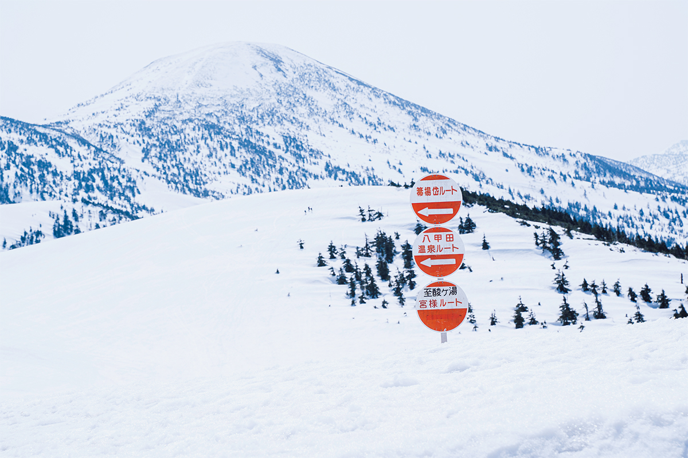
Многим название Хаккода напоминает о массовой гибели людей во время метели в эпоху Мэйдзи, о которой написан роман и снят фильм. Зимой здешний климат действительно суров, и горы надолго скрываются в буране. Но у той же медали есть другая сторона: снега здесь выпадает очень много, а пологий рельеф без высоких пиков хорошо продувается ветром. Для лыжника лучшего места не придумать.
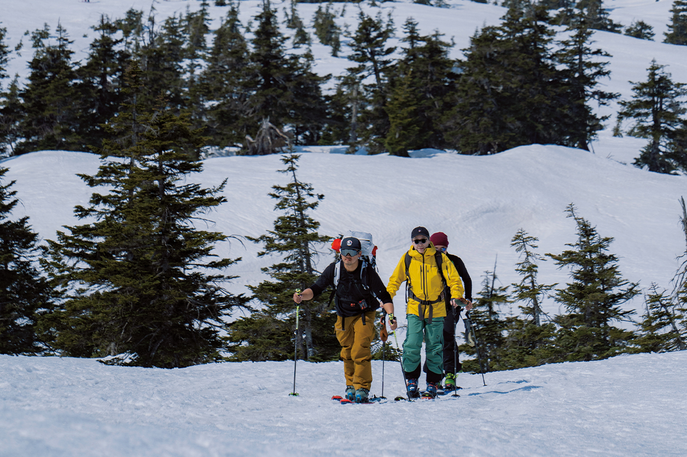
Пики Хаккода высотой около 1500 м расходятся мягкими гребнями, и с давних пор эти горы считают святым местом японских лыж. Кэйдзо Миура (1904–2006), один из первопроходцев лыжного спорта в Японии и отец альпиниста Юитиро Миуры, очень любил родную Хаккоду и проложил здесь несколько лыжных маршрутов. Со временем они стали классическими маршрутами страны, и любители бэккантри приезжают на них со всей Японии и из-за рубежа.
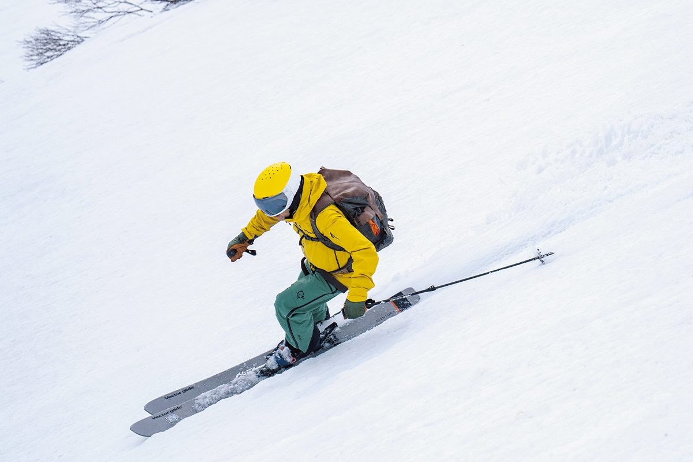
«Говорят, зимой ясных дней на Хаккоде около 3 процентов. Это один день в месяц», рассказывает глава компании Hoshino Resorts, большой любитель лыж. Пушистый снег в разгар зимы хорош, но видов почти не увидишь. Поэтому для поездки он выбирает весну, когда солнца становится больше, и соединяет её с онсэном.
Маршрут
Самый длинный спуск северной Хаккоды
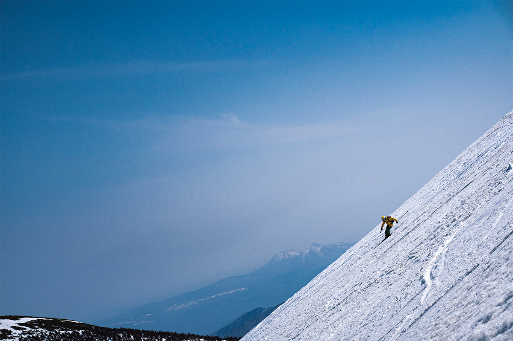
«Добро пожаловать на Хаккоду!» Гостей встречает горный гид, коренной житель Аомори, с широкой улыбкой и на говоре Цугару. «Здесь много маршрутов, это главное достоинство Хаккоды. Начинающим тоже понравится», говорит гид. В тот день в плане был маршрут Хокибатай длиной 7,5 км. Подъём на нём всего 1,2 км, а остальные 6,3 км уходят вниз: это самый длинный спуск северной Хаккоды.
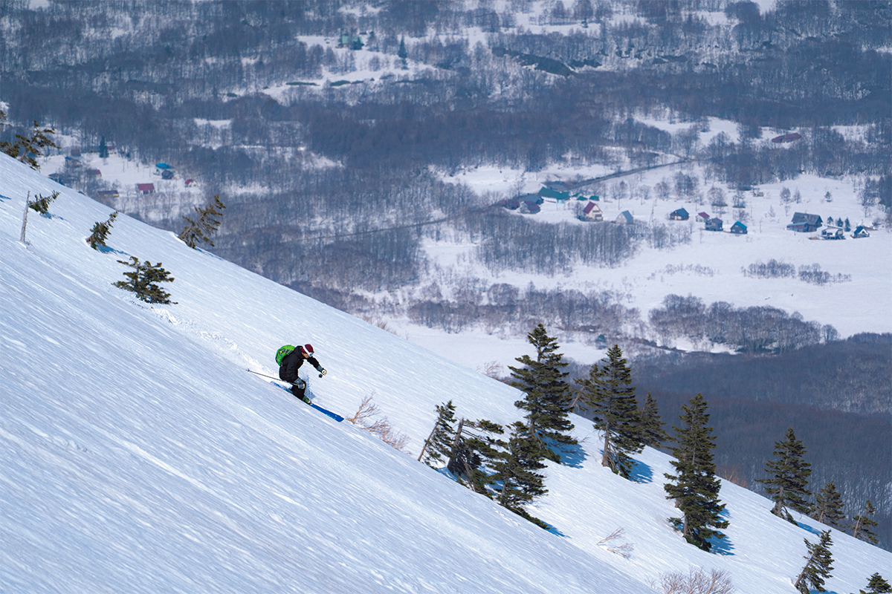
В начале апреля весеннее солнце заливает горы, и для похода лучше погоды не бывает. От верхней станции канатной дороги открывается панорама хребта Хаккода, а вдалеке видно залив Муцу.
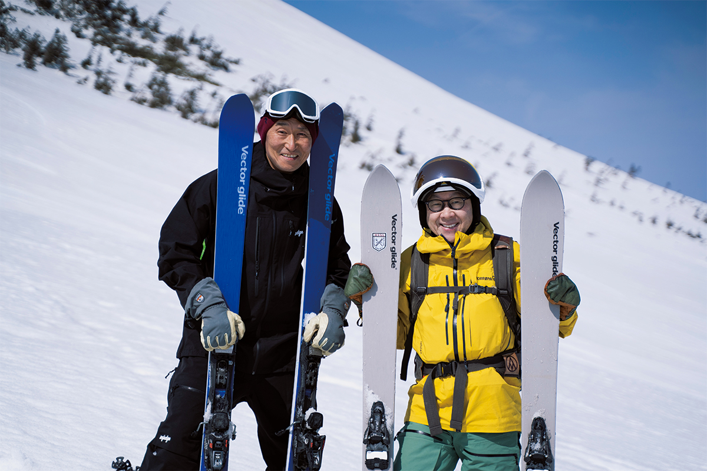
«Хаккода хороша своим масштабом. Такой вид можно увидеть только в ясный день, в этом и прелесть весны», говорит глава Hoshino Resorts.
На тёплом солнце подниматься по склону можно не спеша. Спуски по большим склонам Одакэ и Акакура-дакэ по мягкому снегу и с умеренным уклоном доставляют чистую радость. В фильме зимнюю Хаккоду называли «белым адом», а весной эти горы скорее рай для горных лыжников.
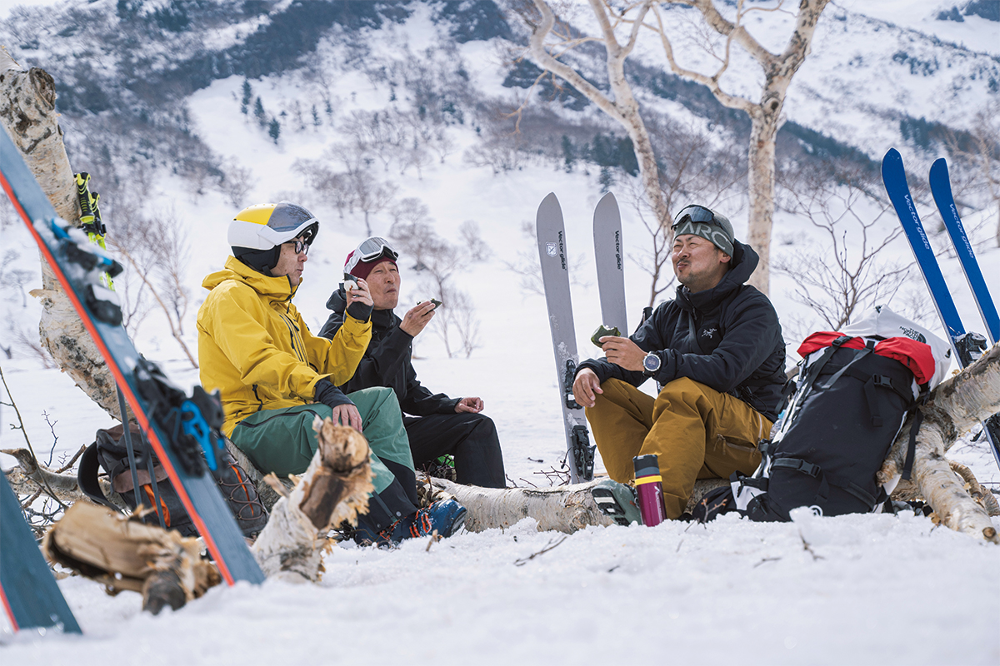
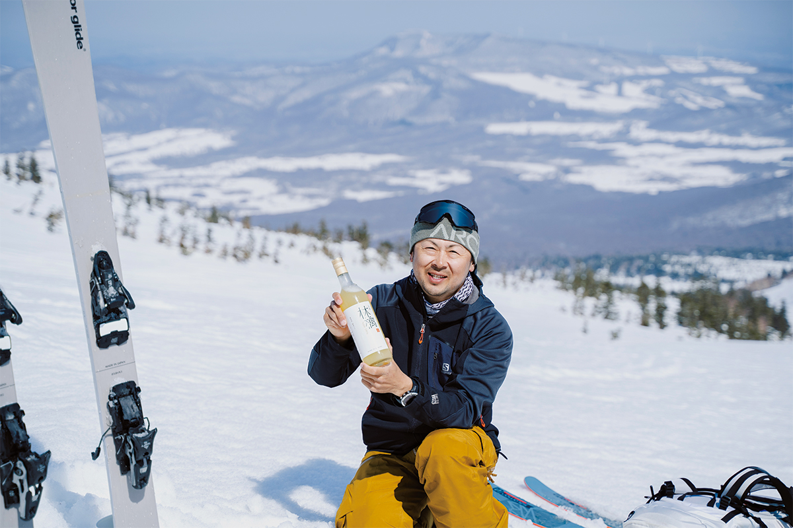
В конце маршрута лыжники въезжают в буковый лес у подножия. Деревья только начинают распускаться и словно светятся на весеннем солнце. Двигаться по огромной снежной горе от одного вида к другому и есть настоящее путешествие.
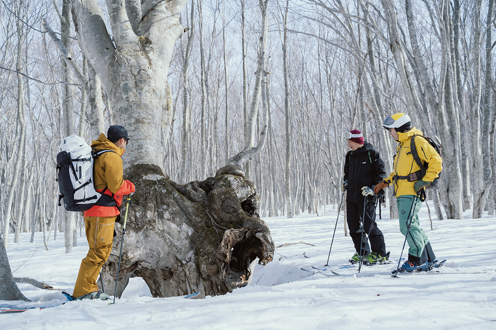
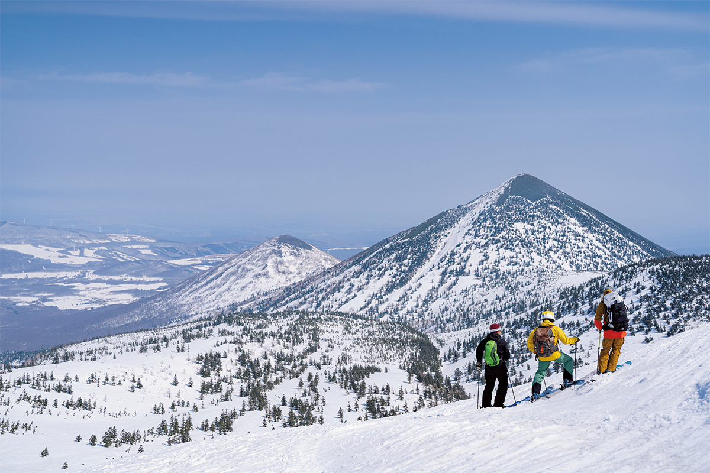
Рёкан
KAI Tsugaru: онсэн для отдыха души
После гор дорога ведёт в Овани на юге Цугару, онсэн, известный с давних времён как место тодзи, долгого лечения горячими водами. У Овани около 800 лет истории, а в эпохи Мэйдзи и Тайсё сюда съезжалось столько гостей, что вокруг купален вырос квартал развлечений. Здесь и стоит рёкан KAI Tsugaru из сети Hoshino Resorts.
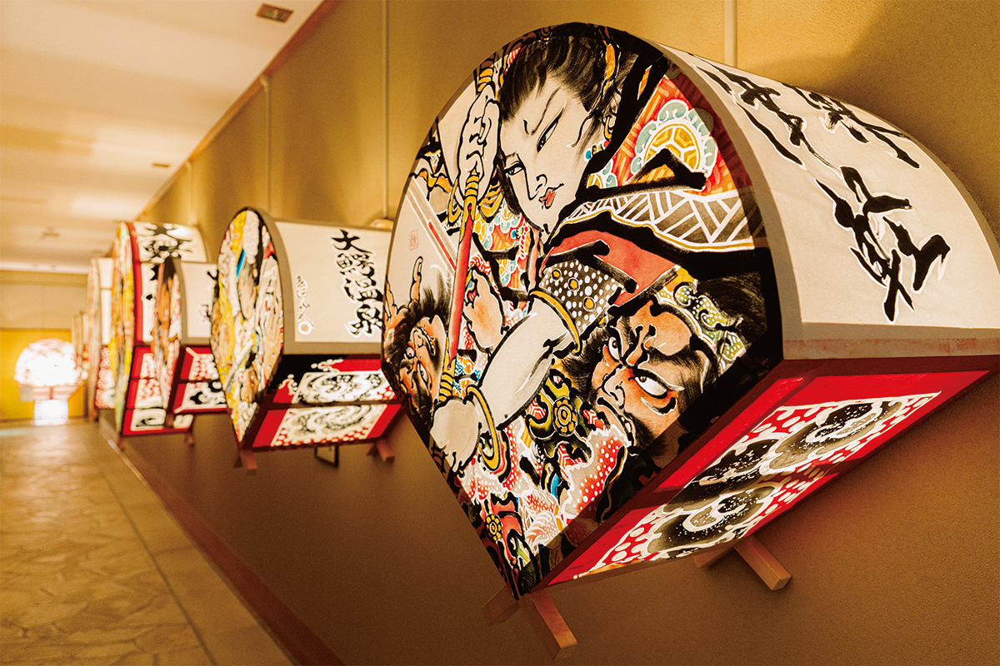
Тема рёкана звучит как «гостиница, где путешествуют по временам года и культуре Цугару». Кроме хорошей воды Овани здесь можно попробовать вышивку когин-дзаси, послушать живой сямисэн Цугару и поесть блюда, в которых чувствуется кухня этого края.
В лобби, где играют на сямисэне, висит роспись «Сюндзю хато» («Волны весны и осени») кисти Матадзо Каямы (1927–2004), одного из крупнейших мастеров японской живописи нихонга. Рядом устроен водный сад, который меняется вместе с сезонами. Под звуки сямисэна на него можно смотреть долго.
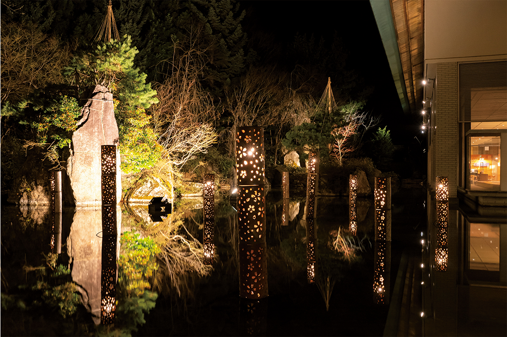
Мотивы культуры Цугару встречаются в коридорах и номерах. Во всём здании тихо и спокойно, и здесь легко выдохнуть. Летом убранство посвящено стеклу «Цугару бидоро», осенью красным листьям, так что сюда интересно возвращаться в разные сезоны.
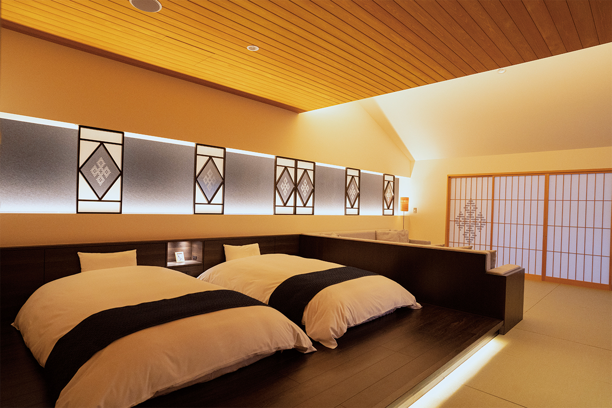
Кухня
«Чёрный бриллиант» на столе
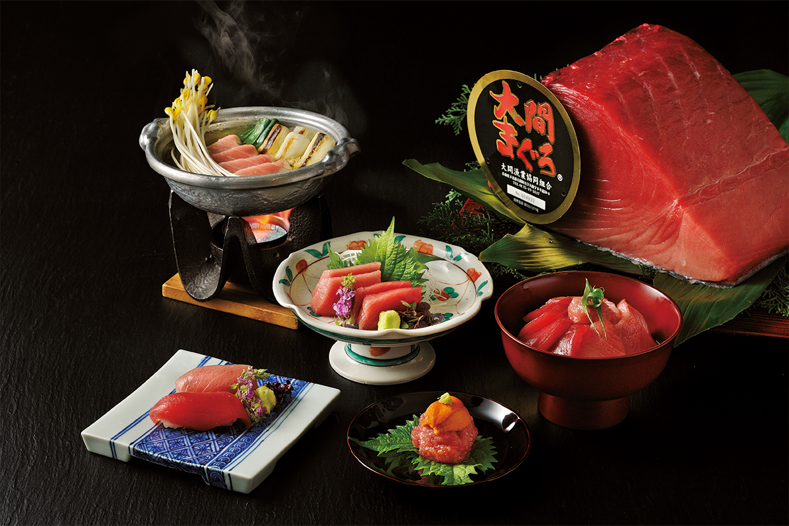
В префектуре Аомори вылавливают много отличных морепродуктов. Холодная морская вода делает мясо рыбы плотным, а талая вода из буковых лесов гор Хаккода и Сираками-Санти приносит в море минералы. Самый знаменитый улов здесь тунец из Ома, который ловят в проливе Цугару. Его считают вершиной всех тунцов и называют «чёрным бриллиантом». В KAI Tsugaru из сезонных морепродуктов готовят особые сезонные кайсэки, то традиционно, то по-новому, и к ним хорошо подходит местное сакэ Цугару.
Онсэн
Старые воды Овани
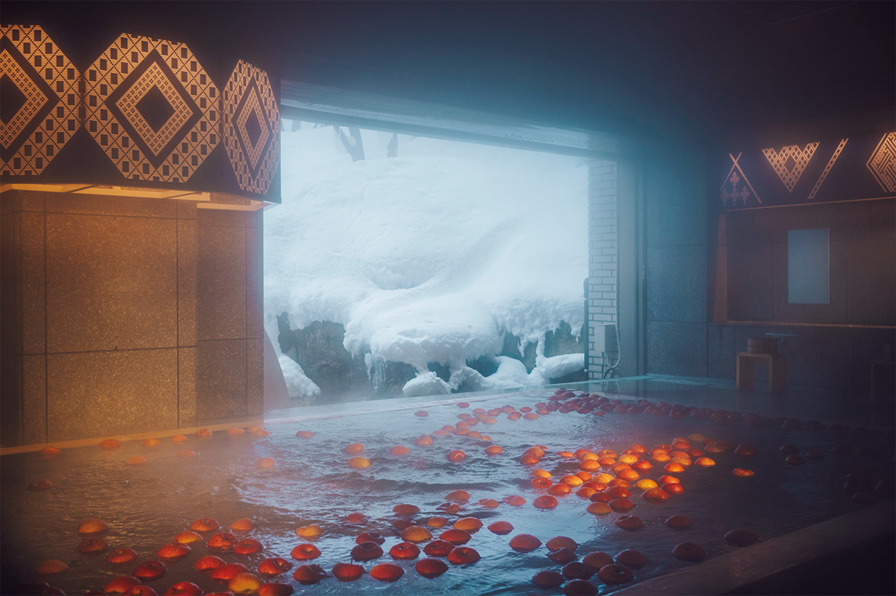
Вода в онсэне Овани прозрачная, без цвета, слабо солёная. Считается, что она помогает при невралгии и ревматизме. Она мягкая для кожи и хорошо держит тепло, поэтому после купания тело долго остаётся тёплым. Город онсэна, который в эпохи Мэйдзи и Тайсё был полон людей, стал тихим и уютным, а на торговой улице сохранилось много зданий и вывесок в духе эпохи Сёва. По ней приятно пройтись в поисках следов прошлого.
Ремёсла
Сямисэн и вышивка Цугару
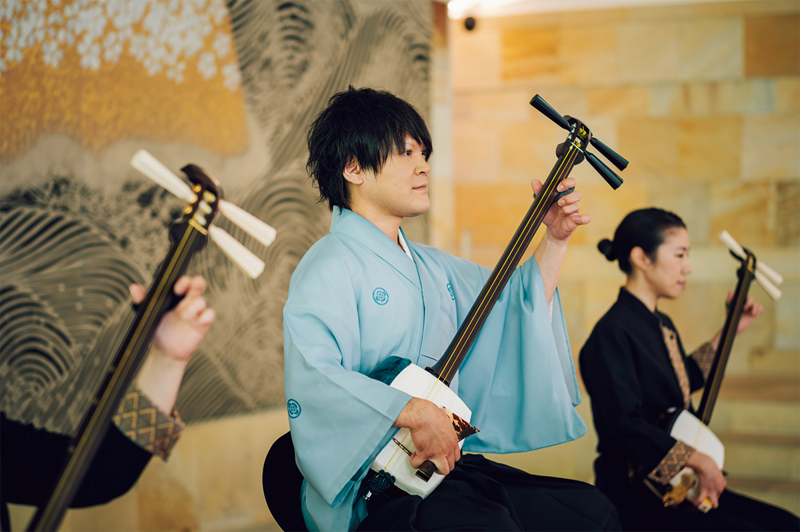
В эпоху Эдо крестьянам Цугару не разрешали носить одежду из хлопка. Чтобы льняная ткань грела и служила дольше, крестьянки прошивали её стежками, со временем из стежков сложились красивые узоры, и так появилась вышивка когин-дзаси. Попробовав её, понимаешь, сколько терпения и выдумки было у женщин старого Цугару. После ужина гостей ждёт ещё одна местная программа: мощная живая игра на сямисэне Цугару.
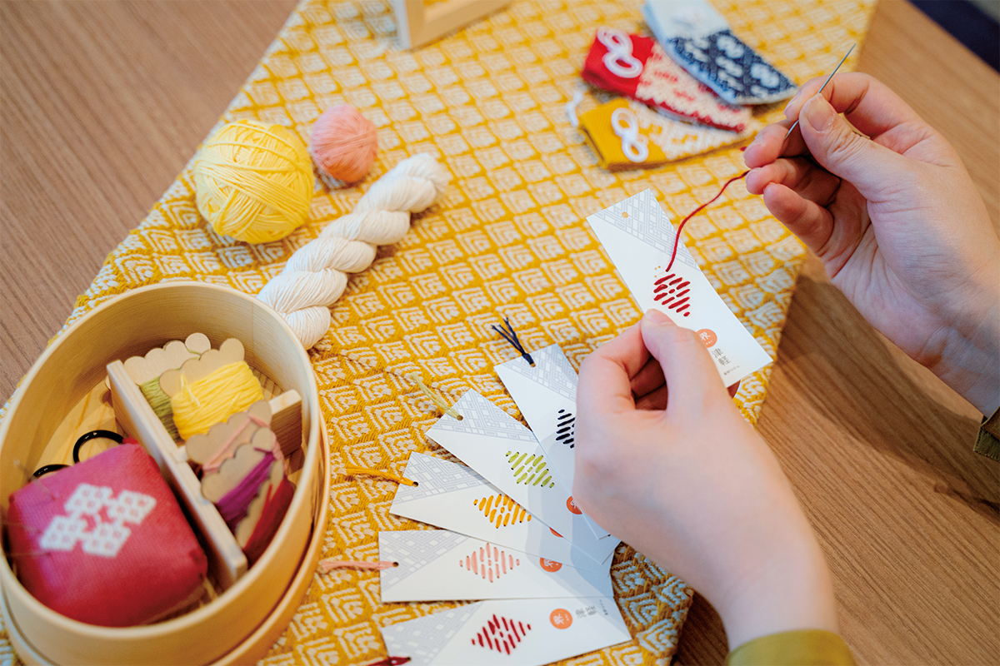
Окрестности
Удобная база для поездок по Аомори
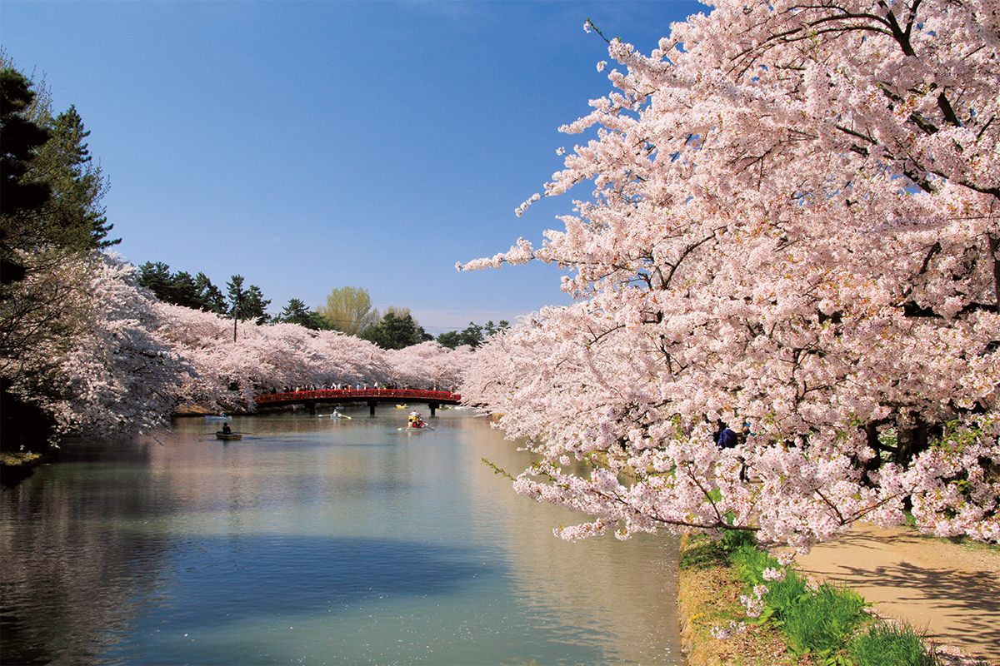
От KAI Tsugaru удобно ездить по известным местам Аомори. Горы Сираками-Санти с первозданным буковым лесом, объект Всемирного природного наследия, горы Хаккода со «снежными монстрами» и осенними травами, старый замковый город Хиросаки в пределах часа на машине. Чуть дальше, в пределах 90 минут, ущелье Ойрасэ и озеро Товада. Поездку можно спланировать вместе с другими отелями Hoshino Resorts в Аомори: Aomoriya и Oirase Keiryu Hotel.
Подробнее: сакура в парке Хиросаки, горы Сираками-Санти, Aomoriya by Hoshino Resorts, Oirase Keiryu Hotel.
KAI Tsugaru
- Адрес
- префектура Аомори, уезд Минами-Цугару, Овани, Овани, Камиботанмори, 36-1
- Телефон
- +81 50-3134-8092 (центр бронирования KAI)
- Номера
- 40
- Цены / Вход
- ночь с ужином и завтраком от 25 000 иен (с налогом и сервисным сбором)
- Заезд / выезд
- 15:00 / 12:00
- Как добраться
- на машине около 20 минут от развязки Икаригасэки Тохоку-автострады; от станции JR Син-Аомори около 50 минут на машине
Фото: Го Ито.